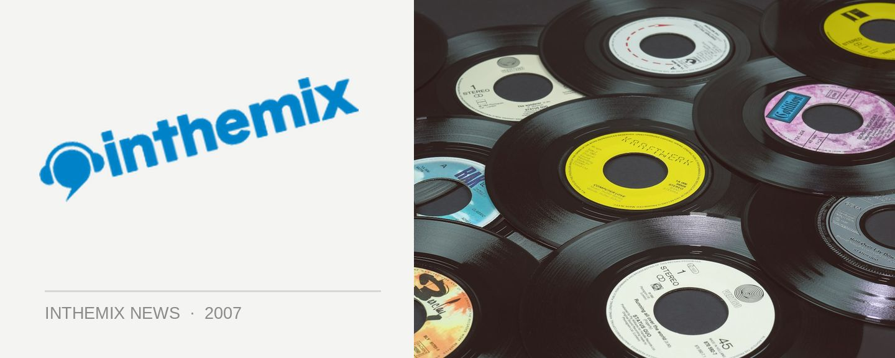

Get your Plan B free download here!
This week’s free download comes from rising the London MC Plan B who has been gathering a huge amount of buzz – check out what all the fuss is about! Appearing out of nowhere on seminal underground London MC compilation Run The Road Volume 2, when people heard his Sick 2 Def they were immediately hooked. Simply one of those ‘what the f***?’ moments for many people, listeners were left slackjawed in amazement.
The young east London MC raps brutally over a minimal, almost baroque, acoustic guitar accompaniment. It’s clear that Plan B is no ordinary MC. He’s as likely to be playing indie venues or folk clubs as he is hip hop jams or raves or R&B gigs. He can spit rhymes and hold his own against any MC or rapper, but can then suddenly switch into a delicate, sweet white soul croon that would shame any boyband.
He accompanies himself on an acoustic guitar, but the killer punch is the lyrics. It’s bleak, cinematic, x-rated urban poetry, laced with wit. The buzz in the UK on Plan B is gargantuan, and we’ve got a track from his stunning debut album Who Needs Actions When You Got Words exclusively for you to download this week!